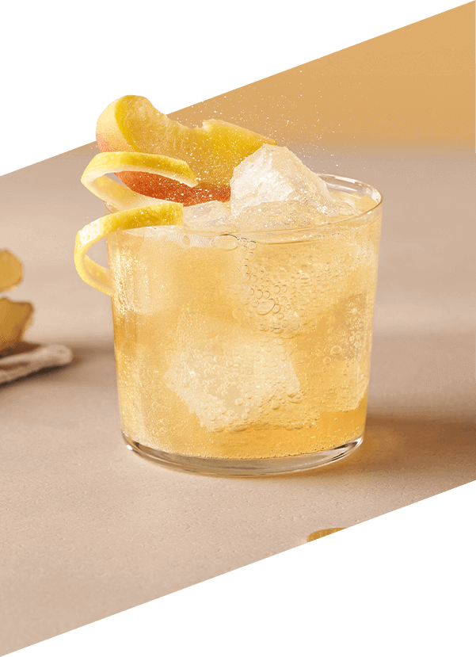
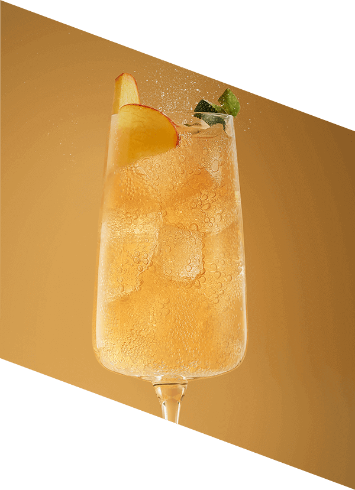
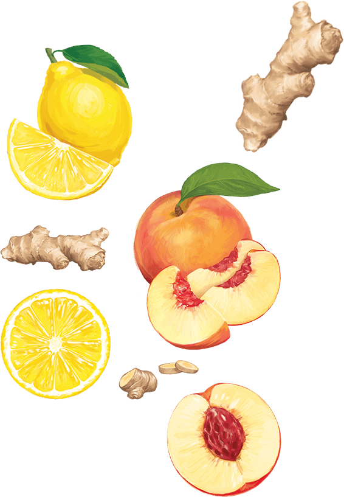

Brzoskwinia & Imbir
Owocny mariaż smaków słodkiej brzoskwini z pikantnym imbirem zachwyca balansem i przyjemnie orzeźwia
Zanurz się w świecie wyjątkowych doznań z nową linią bezalkoholowych baz SodaStream Crafted. Poznaj niebanalne połączenie słodkiej brzoskwini i wyrazistego imbiru i daj się porwać pasji kreowania własnych drinków. Orzeźwiające moktajle na upalne dni? A może wyrafinowane koktajle na wieczorne spotkania? Z SodaStream Crafted każda chwila nabiera niepowtarzalnego charakteru!
Perfekcyjne
koktajle i moktajle
na 1, 2, tssst!
Wyczaruj napój idealny na każdą porę dnia i nocy. Z bazą SodaStream Crafted Brzoskwinia & Imbir stworzysz orzeźwiające moktajle na słoneczne popołudnie i wyrafinowane koktajle na wieczorne spotkania.
Orzeźwiające
w dzień
wyrafinowane
nocą!

Orzeźwiający dzień z brzoskwinią i imbirem
Zafunduj sobie pyszne moktajle z delikatną słodyczą brzoskwini i pikantną nutą imbiru.
Idealne na
spotkania przy
ciastku, chwile relaksu na tarasie czy szybkie orzeźwienie w pracy – każda okazja jest
doskonała,
by sięgnąć po napoje przygotowane na bazie syropu SodaStream Crafted.
Wieczór pełen elegancji
Kiedy nadchodzi wieczór, stwórz wyjątkowe koktajle
z wyrazistym smakiem brzoskwini i imbiru. Niezależnie czy to romantyczna kolacja,
przyjęcie
z przyjaciółmi
czy spokojny
wieczór w domowym zaciszu, SodaStream Crafted podkreśli wyjątkowy klimat każdej chwili.
Poczuj smak
w każdym bąbelku!
gazuj
miksuj
smakuj
Twoja Kuchnia - Twoje Laboratorium Smaku!
Uwolnij kreatywność z SodaStream Crafted! Eksperymentuj z różnymi smakami, dodawaj ulubione
składniki i
ciesz się
efektem "wow"
za każdym razem. Z SodaStream Crafted przygotowanie wyjątkowych napojów
jest proste i szybkie, a efekty przenoszą
do świata yjątkowych doznań smakowych.
Day
Przepis na dzień - Moktajl:
Peach
Lime Refresher
Składniki:
- 20 ml bazy Brzoskwinia & Imbir
- 60 ml wody gazowanej
- 20 ml soku z limonki
- Kostki lodu
- Kawałek brzoskwini i skórka z limonki
Przygotowanie:
- Napełnij kieliszek kostkami lodu.
- Dodaj sok z limonki i bazę SodaStream Crafted Brzoskwinia & Imbir.
- Dopełnij wodą gazowaną, delikatnie mieszając napój łyżką barmańską.
- Udekoruj plasterkami brzoskwini i skórką limonki.
Night
Przepis na wieczór - Koktajl:
Peachy
Prosecco Spritz
Składniki:
- 40 ml bazy SodaStream Crafted Brzoskwinia & Imbir
- 70 ml Prosecco
- 60 ml wody gazowanej
- Kostki lodu
- Plasterki imbiru i listki mięty
Przygotowanie:
- Wypełnij wysoką szklankę kostkami lodu.
- Dodaj Prosecco i bazę SodaStream Crafted Brzoskwinia & Imbir.
- Uzupełnij szklankę wodą gazowaną i delikatnie wymieszaj napój łyżką barmańską.
- Udekoruj plasterkami imbiru i listkami mięty.
SodaStream Crafted
Brzoskwinia & Imbir
Wyrafinowany smak
na każdą okazję

Bezalkoholowa baza do drinków SodaStream Crafted o smaku brzoskwini i imbiru przeniesie Cię w świat wyrafinowanych smaków, które do tej pory można było znaleźć tylko w najlepszych barach! Teraz możesz cieszyć się nimi w domu.
Wystarczy woda gazowana SodaStream i syrop Crafted, aby stworzyć orzeźwiające lemoniady lub wykwintne koktajle z odrobiną alkoholu.
Jedna butelka syropu wystarcza na aż 20 porcji pysznych drinków, idealny sposób na niezapomniane chwile z rodziną i przyjaciółmi.
Twój przepis na idealny napój!
Poznaj zalecane proporcje:

Moktajl:
1 część bazy Sodastream Crafted
+ 10 części wody gazowanej.

Koktajl:
1 część bazy Sodastream Crafted
+ 10 części wody gazowanej
+ 2 części alkoholu.
Twórz, mieszaj,
zaskakuj!
SodaStream Crafted -
Twoja kuchnia, Twoje zasady!
Jedna SodaStream – wiele możliwości
Dopasuj swoje napoje do każdej okazji i nastroju! Sięgnij po syropy SodaStream w Twoich ulubionych smakach – klasyczną Pepsi, egzotyczną Marakuję, orzeźwiającą Pomarańczę Mango, 7UP czy Colę. A to dopiero początek! Z SodaStream czeka na Ciebie jeszcze więcej wyjątkowych smaków, które pozwolą Ci odkrywać nowe, bąbelkowe doznania każdego dnia!
Baw się smakami i twórz wyjątkowe napoje!